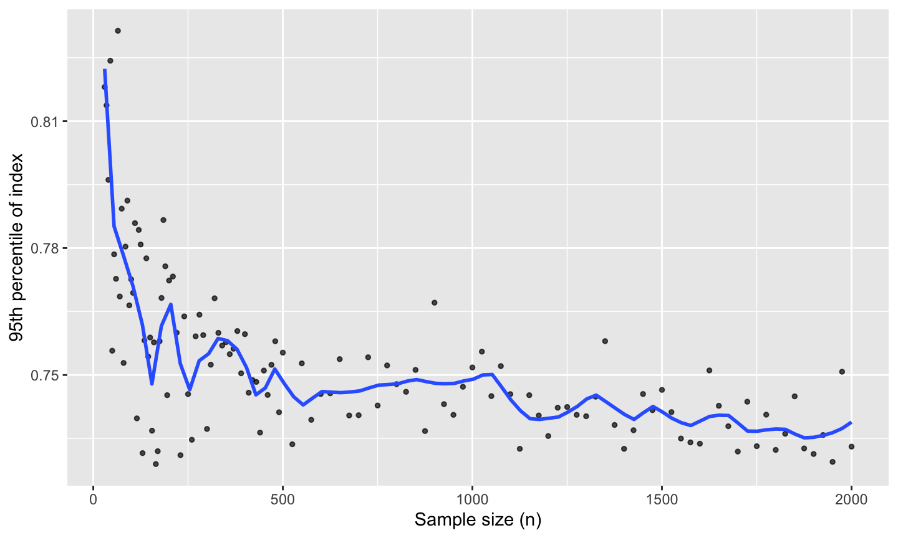

library(ggplot2)
library(spinebil)
library(cassowaryr)Sample-Size Effects for Projection Pursuit Indexes under Gaussian Noise
Overview
This demonstrates how to use the ppi_samplesize_effect() function to study how projection pursuit index (PPI) values behave under increasing sample sizes in purely noisy (Gaussian) data. Understanding how an index behaves under null conditions is critical for:
- Calibrating thresholds for statistical significance
- Identifying sensitivity to sample size
- Comparing robustness across different index functions
What the Function Does
The function ppi_samplesize_effect() runs repeated simulations of standard normal noise across a range of sample sizes. For each size, it computes a specified index function over the samples and records the 95th percentile of index values observed. This helps estimate the distributional behavior of the index under pure noise, depending on sample size. These curves are useful as a null reference: above-curve values may indicate non-random structure.
Function usage
ppi_samplesize_effect(index_fun, n_sim = 100)-
index_fun: a function that accepts the data for one simulation and returns a single numeric index value. -
n_sim: the number of simulations per sample size (default 100).
Internally, the function evaluates a grid of sample sizes from 30 up to 2000 (denser at small sizes), simulates
n_simdraws for each, and returns the 95th percentile of the resulting index values.
Example Usage
Let’s evaluate the stringy index from the cassowaryr package to see how its values change under noise as the sample size increases.
result <- ppi_samplesize_effect(scagIndex("stringy"), n_sim = 4)
head(result)
#> # A tibble: 6 × 2
#> SampleSize Percentile95
#> <dbl> <dbl>
#> 1 30 0.762
#> 2 35 0.768
#> 3 40 0.788
#> 4 45 0.793
#> 5 50 0.755
#> 6 55 0.802
tail(result)
#> # A tibble: 6 × 2
#> SampleSize Percentile95
#> <dbl> <dbl>
#> 1 1875 0.744
#> 2 1900 0.742
#> 3 1925 0.740
#> 4 1950 0.734
#> 5 1975 0.735
#> 6 2000 0.744Plot the 95th-percentile
ggplot(result, aes(SampleSize, Percentile95)) +
geom_point(alpha = 0.7, size = 1) +
geom_smooth(se = FALSE, method = "loess", formula = y ~ x, span = 0.1) +
labs(
x = "Sample size (n)",
y = "95th percentile of index"
) 
Return value
ppi_samplesize_effect() returns a tibble:
-
SampleSize: the sample size for that block of simulations -
Percentile95: the empirical 95th percentile of the index across then_simsimulations at that size.